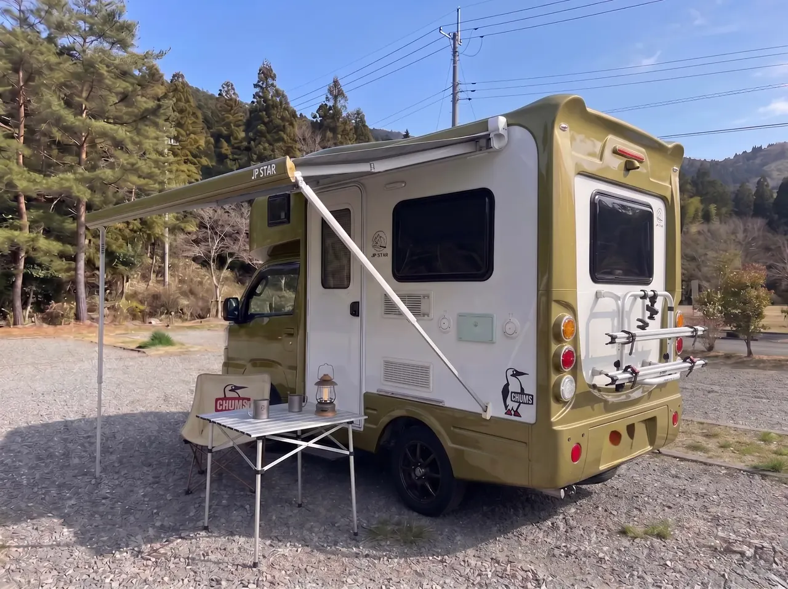

MODEL COURSE 03 ── HAKODATE / DONAN
洞爺湖の朝と 函館の夜景と 朝市の海鮮を ひと続きで
新千歳空港発着 ── 道南をぐるりと巡る王道コース

OVERVIEW
洞爺湖の湖畔、函館山の夜景、朝いちばんの函館朝市、そして大沼公園。道南の見どころは「朝と夜が本番」のスポットばかりです。ホテルのチェックイン時間や朝食時間に縛られないキャンピングカーなら、夜景を見たあとそのまま眠り、朝市の開店に合わせて起きるという旅ができます。3泊4日・総走行距離は約650km、1日あたり約160kmの無理のない配分です。
新千歳空港 → 支笏湖 → 白老 → 洞爺湖（泊）
新千歳空港でHAPPY1を受取り → 出発
当店では新千歳空港へのお届けサービス（配車）を実施しています。空港に着いたらそのまま乗り込んでスタート。店舗への移動は不要です。
💡 初日の移動は約120kmと短め 買い出しの時間をたっぷり取れます近隣スーパーで4日分の買い出し
HAPPY1はキッチンと冷蔵設備を備えています。道南は海産物と乳製品が豊富なので、走りながら地元スーパーや直売所を覗くのも旅の楽しみです。
支笏湖から白老へ 湖と海を続けて見る
支笏湖は透明度の高いカルデラ湖。湖畔で休んだあと白老へ抜けると、こんどは太平洋が広がります。短い移動で景色ががらりと変わる区間です。
洞爺湖へ移動 展望台から湖を一望
洞爺湖は中央に中島が浮かぶカルデラ湖。高台の展望台からは、湖と羊蹄山を同じ画角に収められます。
洞爺湖周辺の道の駅で車中泊
夏期は洞爺湖畔で毎晩花火が上がります。宿を取らない旅なら、花火が終わってから移動せずそのまま休めます。
洞爺湖と有珠山のふもと。24時間トイレのある拠点を選ぶと安心です。電源付きRVパークなら翌朝のコーヒーも快適に。
洞爺湖 → 長万部 → 函館・五稜郭 → 函館山（泊）
噴火湾沿いを南下
洞爺から長万部にかけては、右手に山、左手に海が続く気持ちのいい区間。道の駅が点在するので休憩を挟みながら進みます。
長万部でかにめしのランチ
長万部はかにめしの駅弁で知られる町。車内にテーブルがあるので、買ってから景色のいい場所まで走って食べるという選択もできます。
五稜郭タワーから星形の城跡を見下ろす
五稜郭は上から見てはじめて形がわかる城跡です。タワーの展望台からなら、五角形の堀と土塁がまるごと視界に入ります。
函館山の夜景
くびれた地形の両側に海が広がり、街の灯りが帯状に浮かび上がります。日没直後、空にまだ青が残る時間帯がとくに美しいとされています。
💡 登山道は夜間マイカー規制の期間あり ロープウェイ利用が確実です函館近郊の車中泊拠点へ
夜景を見たあとに宿へ戻る必要がないのが、この旅のいちばんの利点です。翌朝の朝市に近い拠点を選んでおきます。
翌朝の函館朝市に向かいやすい位置で休むのがおすすめです。市街地の一般駐車場ではなく、車中泊が可能な拠点を選んでください。
函館朝市 → 元町・赤レンガ倉庫 → 大沼公園（泊）
函館朝市で海鮮丼の朝ごはん
朝市は早朝から動き出します。宿の朝食時間を待たずに動けるのが車中泊の強みで、いちばん活気のある時間帯に入れます。
💡 車中泊なら開店直後を狙える 混雑前の朝市は別物です元町の坂と教会群を歩く
八幡坂をはじめとする坂道の先に港が見える、函館らしい景色が並びます。教会や洋館が集まる一帯は徒歩でまわるのがおすすめです。
金森赤レンガ倉庫でお土産探し
ベイエリアの倉庫群はショップとカフェが集まる観光拠点。買ったものは車に積んでおけるので、手ぶらのまま歩き続けられます。
大沼国定公園へ移動
駒ヶ岳を映す湖と、大小の島を結ぶ遊歩道。サイクリングや遊覧船もあり、夕方までゆっくり過ごせます。10月の紅葉期はとくに見事です。
大沼・七飯周辺で車中泊
翌日の帰路に向けて、少し北寄りの拠点で休みます。静かな湖畔の朝は旅の締めくくりにふさわしい時間です。
大沼公園に近く、翌朝もう一度湖畔に寄ってから出発できる位置です。
大沼 → 登別温泉 → 店舗（返却）
朝の大沼をひと歩き
観光客が増える前の湖畔は驚くほど静かです。チェックアウトの時間に追われない旅だからこそ取れる時間です。
道の駅で最後の買い出し
道南は農産物の直売所が充実しています。持ち帰り用の野菜や乳製品はここで。冷蔵設備があるので溶ける心配もありません。
登別温泉に寄って地獄谷を散策
白い噴気が上がる火山地形を遊歩道から見学できます。硫黄のにおいと地鳴りは写真では伝わらない迫力です。日帰り入浴で旅の疲れを流してから帰路につけます。
店舗へ返却
札幌市白石区の店舗へお戻りください。新札幌駅までの送りは無料で承っています。
💡 給油と簡単な清掃をお願いしています 返却前に道の駅で済ませると流れがスムーズですPOINT
#函館山#宿へ戻らない
#函館朝市#海鮮丼
#道の駅#RVパーク
#初めての北海道でも
#キッチン完備#直売所めぐり
#駒ヶ岳#湖畔の遊歩道
BUDGET
| 費用項目 | 目安金額 | 備考 |
|---|---|---|
| レンタル料金（平日3泊） | ¥71,280 | 通常期平日 ¥23,760×3泊（5泊未満のため割引対象外） |
| レンタル料金（土日含む3泊） | ¥76,032〜 | 平日¥23,760×2＋土日祝¥28,512 |
| 配車（新千歳空港お届け） | ¥16,500 | 1回・新札幌駅お迎えなら無料 |
| 高速料金 | 約¥5,000〜7,000 | 道央道（新千歳〜洞爺・長万部方面） |
| ガソリン代 | 約¥11,000〜15,000 | 約650km・燃費8〜10km/L目安 |
| 宿泊費 | ¥0〜9,000 | 道の駅無料〜RVパーク3泊分 |
| 食費 | 約¥20,000〜30,000 | 函館の海鮮・かにめしを含む4日分 |
| 観光・入館など | 約¥8,000〜15,000 | 函館山ロープウェイ・五稜郭タワー・温泉 |
| 合計目安（平日3泊・2名） | 約¥132,000〜169,000 | レンタル料金・配車料込み |
FAQ
LET'S GO SOUTH